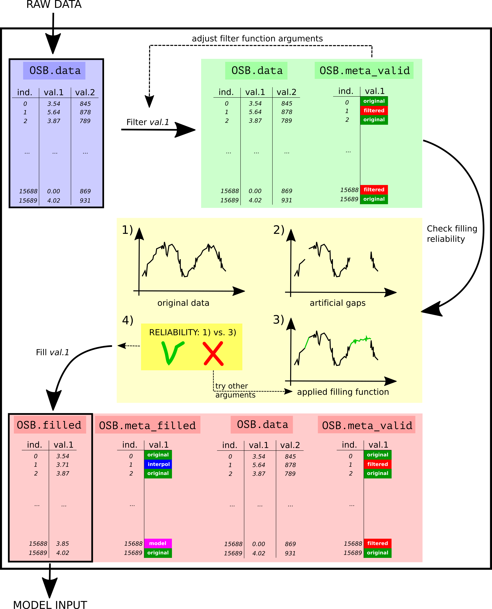

wwdata¶


Data analysis package aimed at data obtained in the context of (waste)water
- Free software: GNU General Public License v3
- Documentation: https://wwdata.readthedocs.io
- Funding: Waterboard De Dommel
- Context: PhD research at BIOMATH, Ghent University
Structure¶
The package contains one class and three subclasses, all in separate .py files. Division in subclasses is based on the type of data:
- online data from full scale installations (OnlineSensorBased)
- online data from lab experiments (LabSensorBased)
- offline data obtained from lab experiments (LabExperimentBased).
Jupyter notbeook files (.ipynb) illustrate the use of the available functions. The most developed class is the OnlineSensorBased one. The workflow of this class is shown in below Figure, where OSB represents an OnlineSensorBased object. Main premises are to never delete data but to tag it and to be able to check the reliability when gaps in datasets are filled.
Examples¶
For the workflow with code and more specific examples, check out the Showcase Jupyter Notebook(s) included as documentation of the package.
Credits¶
This package was created with Cookiecutter and the audreyr/cookiecutter-pypackage project template.